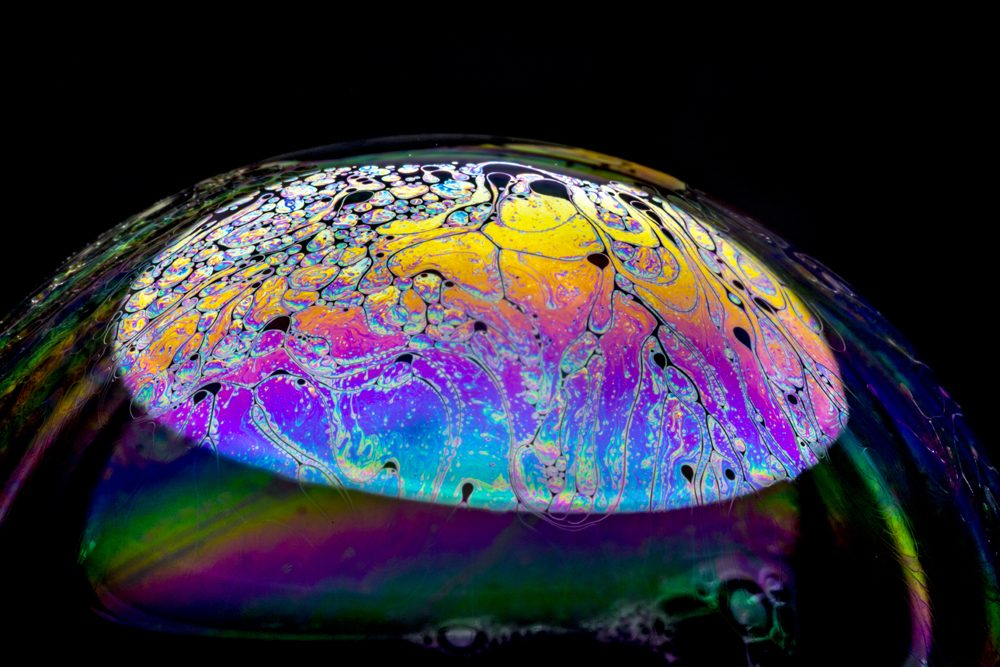
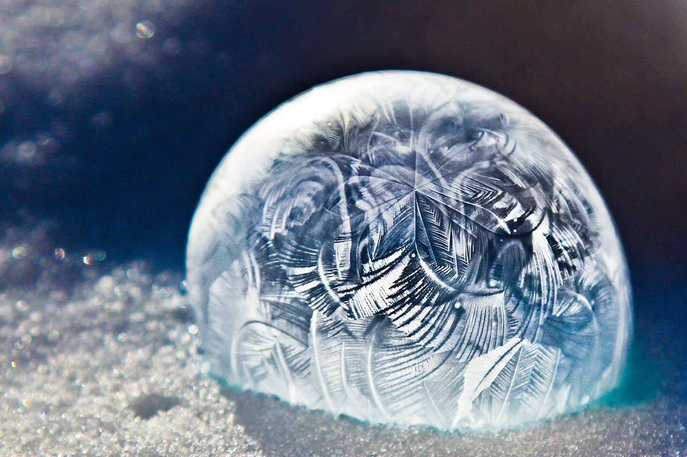
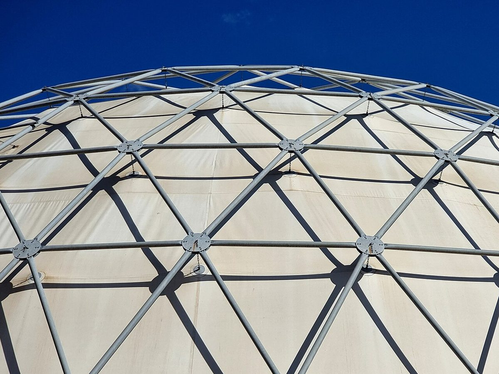
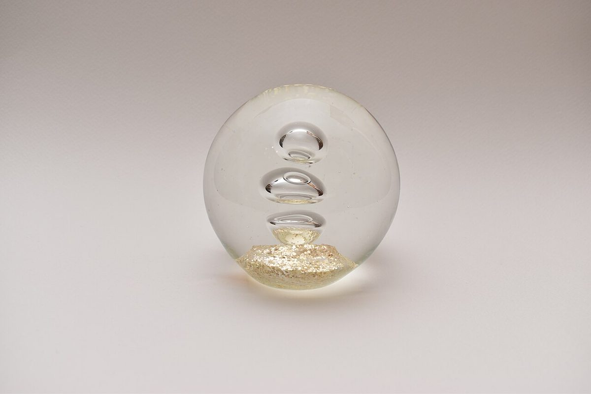
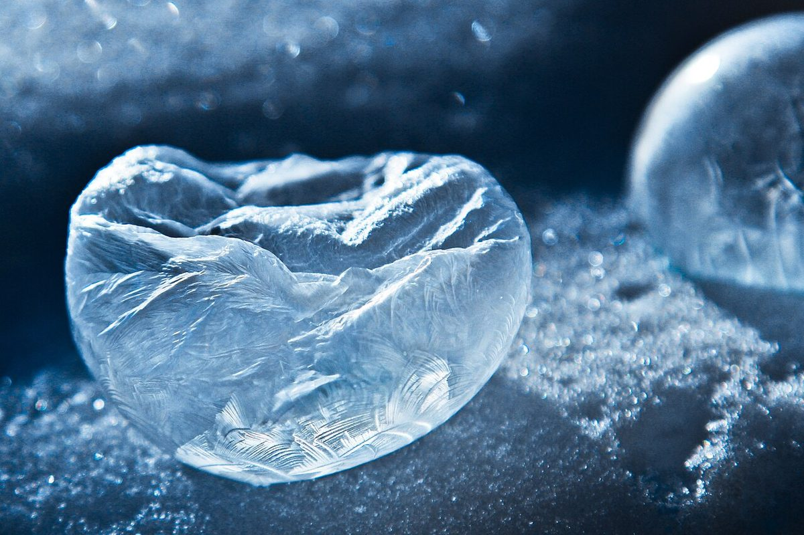
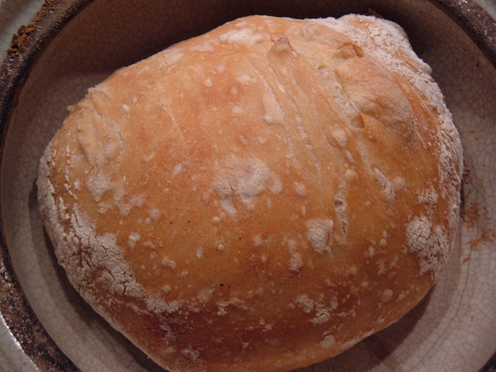

制作側の連想
「ドム」から丸屋根を思い浮かべた
店名の由来は分かりません。制作側は「ドム」という音から、半球の丸屋根「ドーム」を連想しました。丸屋根の骨組みは、三角をどんどん細かくすると球に近づきます。そこで各ページに1V〜5Vの番号を付け、ページが進むほど細かく割った半球の絵を載せています。お店の理念や由来とは無関係の、制作側の連想です。
半球と球の仲間たち
半球と球のアップ、6つ。
写真は出水市やお店のものではありません。国外・撮影地不明のフリー素材で、半球・球・骨組みのイメージとして選んだものです。






ものさし
割る回数と三角の枚数
| 1V | 20枚 |
|---|---|
| 2V | 80枚 |
| 3V | 180枚 |
| 4V | 320枚 |
| 5V | 500枚 |
1Vは正二十面体そのもので、球全体で20枚。割りを細かくするほど、数は「20×(Vの数)×(Vの数)」で増えていきます。
これは丸屋根の一般的な数え方の紹介で、お店の内容とは関係ありません。
まるい仲間
丸いものを並べてみる
下の写真はイメージです。お店で提供しているものを示すものではありません。



ご案内
お店のこと(確認できたものだけ)
| 所在地 | 〒899-0205 鹿児島県出水市本町１１−２６ |
|---|---|
| 電話 | なし |
| 営業時間 | 準備中 |
| 定休日 | 準備中 |
| ご予約 | 準備中 |
| 駐車場 | 準備中 |
| SNS | Instagram @coffeee_dom |